Just some pics.
Bath
I visited Bath and discovered a lovely city rich in photo opportunities. Guy McCusker took me for a two-hour walk around the beautiful autumnal countryside, and Alessio Guglielmi stood patiently in the freezing cold as I tried to capture Bath Cathedral seen from the top of a very windy hill. It looked like a jewel, though I fear I didn't quite manage to capture that. I have about twenty photographs of a blurred mess — and one half-way decent image, which you can enjoy below.

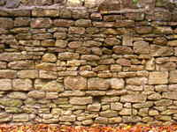

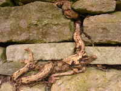

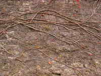

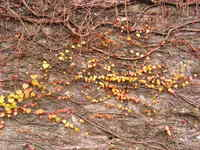

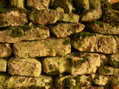

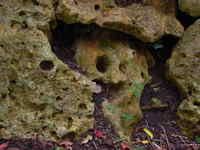


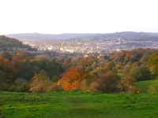

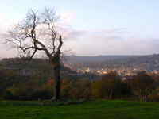

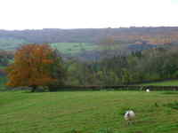


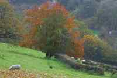

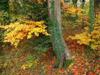

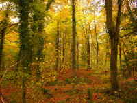

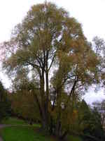

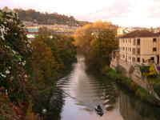

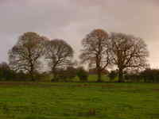

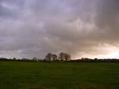

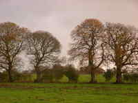

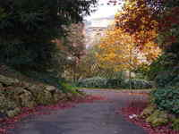

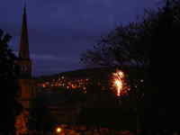

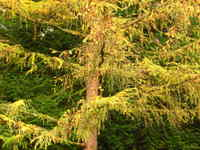

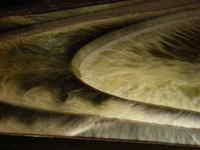
Blackpool
I've been to Blackpool a couple of times, for the Brit Salsafest. In 1900 Blackpool was once the place to be. Now the city is tacky--but in a comfortable and charming way which I quite enjoy. I was lucky with hotels; I picked a nice one with a sauna and an indoor swimming pool, and better yet just look at what they painted on the walls.

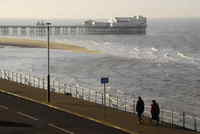

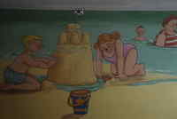

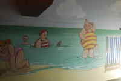


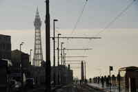
Bristol
The two photographs below are of the Clifton Bridge over the Avon Gorge. This was the first major commission of the then 24-year-old Isambard Kingdom Brunel, a man who went on to become one of the engineering architects of the British industrial revolution. There is something movingly true about the sweep of this bridge. I liked it very much.
But never mind all that historical romantic stuff. So I was in Bristol and needed to get to the train station. I waited at a bus stop for a while, waved down a bus, and asked the driver “Do you go to the train station?”
. He replied “No — but I'll make a detour to drop you off”
. I nearly fainted from shock.
I grew up in London. In London ‘other people’
means a species of vermin that populates your seat in the tube, drives up the price of the house that you want to buy, and either wants to steal your mobile phone or owns a mobile phone that you'd steal if you could only be sure of being in a CCTV blind spot. Many professions must deal with ‘other people’
on a daily basis but of them all bus drivers get it worst — they don't smell (like rubbish collectors) and although they are in control of potentially lethal equipment they're not authorised to use it (like the police are). So they're a pretty calloused lot.
So if a Bristol bus driver was nice to me, that means that in Bristol ‘other people’
are actually nice — to each other! Now fancy that!


Madrid cycle festival
There was a cycle parade. It was nice to watch, but what made it special for me was the kids. It was a hot day and a 30Km ride — quite a lot for a child. Some were bored, some were delighted, some were very serious, some were confused, and the youngest where just asleep and would to wake up with sticky underwear, sunburn, and a bad temper; and who could blame them? I could just see, ten years down the line, a generation of adolescents hating or loving their parents, just depending on what they were feeling today.


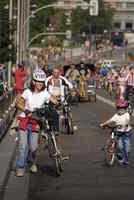

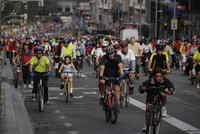

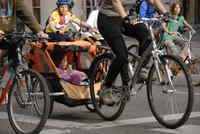


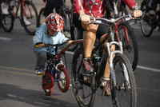

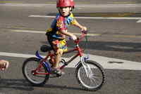


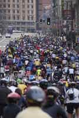


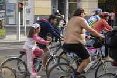

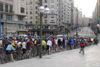


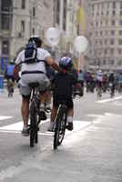
Flowers
I like flowers, though it is definitely a problem to make a photograph that doesn't look like a postcard or birthday card. I did my best. I didn't get the e-mail of the lady below; she's very welcome to get in touch.

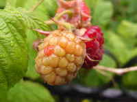


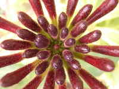

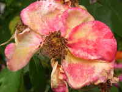


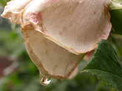


Difference between Newcastle and Madrid
Yes, I am being unfair. What are yee gunna dee aboot it?


Innsbruck
Innsbruck is absolutely gorgeous. Sadly, I was there only briefly and had little opportunity to take photos. This single shot came out well, which surprised me because it was a 4 second exposure and I held the camera in my hands without any kind of stabilisation.

King's College
I spent a happy year working in King's College with Maribel Fernández. King's must be one of the best places to work in London; right in the theatre district, near Covent Garden, and near the river. It has a great chapel too.


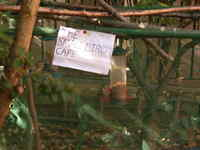
London
To wander in London is to have photo-opportunities. The same is true of Venice — and of Bath, and of many other places. However: in Venice you can be pretty certain the photo-opportunity will involve architecture and water or perhaps a costume. In Bath, if you go for architecture and wonderful green rolling hills then you're sorted. In London it could be anything: animal, vegetable, mineral, dark matter, heavy metal, goth, foreign, space-age, decrepit, bizzare, sublime. You name it, it's round a corner.

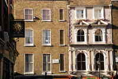

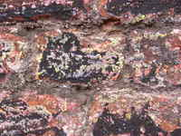

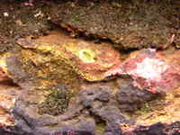


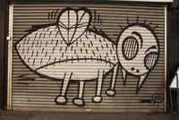


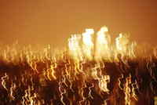


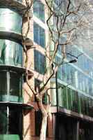


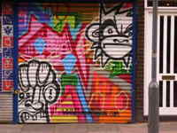

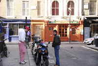

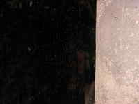

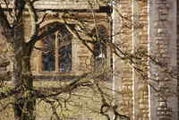

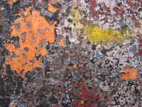


Madrid bricks
Madrid doesn't have terribly interesting bricks, to be frank. But you can't generalise; there's this one wall that looks for all the world like it's made out of skulls. It even has tortured, angry, alien faces in it. Or maybe it's just the way the light was falling; I went back the next day and it was just a wall of stones.


Madrid
Madrid is a real party city. They start partying at midnight and go on till about 5am. I'm afraid I was too busy dancing to have time to photograph much — a man has to get his priorities straight.
While I was photographing near Aluche a burly man stood near me and sized me up from the corner of his eye. After the Madrid bombings the transport police remain extremely touchy about photograph-taking. I decided to be on my way. Then again, perhaps I was safe; perhaps he only wanted to mug me.


Myself
Reflections on myself.


Misc
I really don't know how to classify this.


.jpg){kind=link}

People
People. Difficult to photograph because they react to the camera (and rightly so).


Emily Post &mdash for computer scientists

Sunrise over Muswell Hill
I got back from dancing at around 4am one summer's morning, and just happened to look out the window.


Trees
I like trees.


Artist
No photographer is an artist until they've done a nude shot, and a camp shot. Well ... here they are!


Dov
This is my father, caught unawares by my Nokia 7710 camera phone in a moment of reflection.
‘For he would rather have at his bed's head /
Some twenty books, all bound in black and red, /
Of Aristotle and his philosophy /
Than rich robes, fiddle, or gay psaltery.’